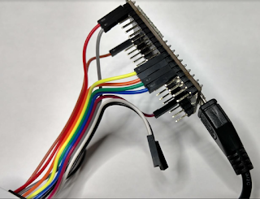

Notes and information on JTAG Debugging the ESP32 WROOM-32 (aka DevKitC, aka ESP32_Core_Board_V2)
I started off my day thinking I'd take my ESP32 for a JTAG test drive. Searching for pinouts I quickly realized there are known bad pinouts floating around. This was quite a surprise as the ESP32 has been out for well over a year. I wasted a ton of time on that. I'm posting my findings here.
As one might expect - the Adafruit pinout appears to be the most accurate one:
from:
https://cdn-shop.adafruit.com/product-files/3269/pinout_wroom_pinout.png
(many thanks to the folks at @esp32net for responding to my tweet and helping to identify correct pinout).
So if you happen to see the pinout on the sparkfun site, the information is WRONG (hopefully they will correct it soon):
https://www.sparkfun.com/news/2017
(bad pinout here!)
I modified a known-good pinout image to create this little reference to easily identity a bad ESP32 pinout.
Hint: look for the locations of the GND pins
.
|
|
| Not all online pinouts are accurate. Here's where to find proper GND on ESP32 |
Really, the ultimate authority is of course the Espressif data sheet:
The PDF has this pinout overview, with the functions listed in a table on the following pages of the PDF:
See also the Espressif ESP-IDF docs on GitHub:
Ok, so once the correct pinout is found - there was a moment of "oh no, all the JTAG pins are not available on my CoreBoard V2 breakout (grumble, grumble I don't want to solder them on)". But no... all good. Who would think that SD2 = TCK?
I should mention that "ESP32_Core_Board_V2" is the same as "ESP32-DevKitC"
Resources available here:
In particular the PDF of schematic found in "ESP32 Development Board Reference Design":
found in the zip buried in this directory:
ESP32_Development_Board_Reference_Design\ESP32-DevKitC(ESP32_Core_Board_V2)\01_Schematic
I took a variety of sources and copy/pasted into a new pinout diagram for myself:
This one is the whole dev board and includes the 20 pin JTAG header, and my (arbitrary) color code:
|
|
| ESP32-WROOM32 Pinout for ESP32 DevKitC / ESP32_Core_Board_V2 |
So these days, I've been really enjoying the JTAG capabilities of the Sysprogs VisualGDB:
They have a tutorial for ESP32 JTAG here:
Online tutorials are really awesome. I wonder how long it would have taken me to figure out Step 7 on my own! ha! (issue with Visual Studio/ESP-IDF framework and optimization default problem: who would have guessed?)
But that tutorial is using the Sparkfun ESP32 Thing, and mine is the Adafruit ESP32 Core Board V2, mentioned above.
Note: Although the Sparkfun apparently has an LED on GPIO5 - according to the schematics, the only LED on this board is the power LED - so don't expect it to blink - unless you are having really serious power problems! ;) But the sample code does indeed control GPIO5.
There's a recommended max of 6mA per pin on ESP32, with and absolute max of 12mA (read: you could still damage or shorten life). Many LED's run at 20mA and drop 1.8V. At (3.3V - 1.8) = 1.5; this means you should be using at least a (1.5/0.006) = 250 or 270 ohm resister for only 6mA. This may not result in a very brightly illuminated LED.
Here are a couple of hookup pics:
|

|
| JTAG connections for ESP32 |
|
|
| JTAG connections to Segger J-Link for ESP32 |
For information on VSCode debugging of ESP32, see
this post.
Visual Studio 2017 source code for ESP32 JTAG Tutorial:
As a bonus, the tutorial is based on freeRTOS (I think all of the ESP32 code is using that). There's a pretty good UDemy FreeRTOS class that I'm taking:
Where to buy:
https://www.adafruit.com/product/3269
See also:
http://esp32.net/
(this site is so comprehensive, I should say "start here first!")
Copyright (c) gojimmypi all rights reserved. Blogger Image Move Cleaned: 5/3/2021 1:35:51 PM
{kind=link}
{kind=link}
{kind=link}
{kind=link}
{kind=link}
{kind=link}
{kind=link}
{kind=link}
{kind=link}
{kind=link}